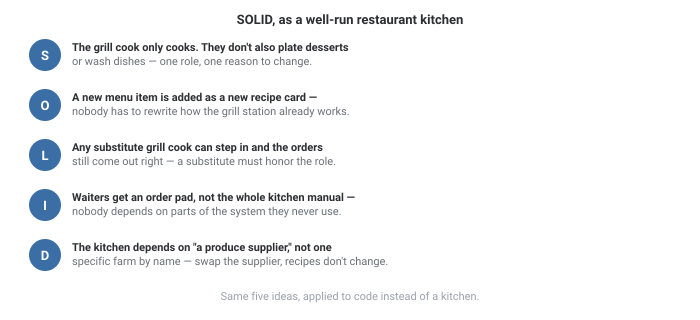
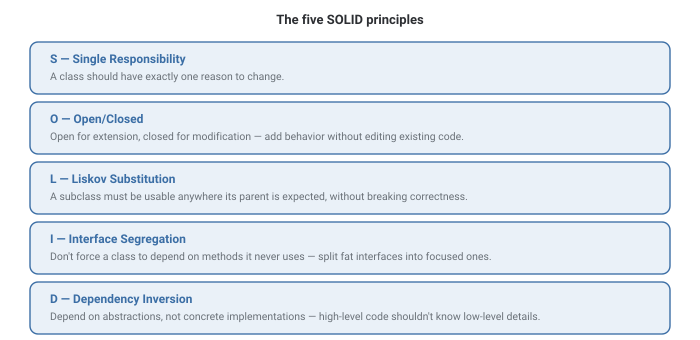

SOLID Principles
Five naming conventions for the same underlying goal: code that's easy to change safely, because the parts that need to change are isolated from the parts that don't.
In Plain English
Picture a well-run restaurant kitchen, and map each SOLID letter onto a habit that keeps it running smoothly.

All five letters are really one idea repeated from different angles: keep each part of your code doing one job, and let those parts talk to each other through simple, stable interfaces instead of hardcoded specifics.
SOLID isn't a checklist to satisfy on every class — it's a set of pressure-release valves you reach for when a specific kind of change is getting painful. Applying all five everywhere, all the time, creates its own mess: too much indirection for code that never actually needed to flex.
Theory & Diagrams
The five principles
SOLID is five separate ideas about how to structure classes and their dependencies so that change in one place doesn't cascade into changes everywhere else.

Single Responsibility (S)
A class with two responsibilities has two reasons to change — and a change driven by one responsibility risks breaking the other. Splitting them means each class only ever has to be touched for one kind of reason.
Open/Closed (O)
Code should be open for extension (new behavior can be added) but closed for modification (existing, working code doesn't need to be edited to add that behavior). In practice, this usually means depending on an interface and adding new implementations rather than adding new branches to an existing function.
Liskov Substitution (L)
If Bird has a fly() method, a Penguin subclass that throws an exception from fly() violates this principle — code written against Bird silently breaks the moment it receives a Penguin. A subclass has to honor the behavior its parent promises, not just its method signatures.
Interface Segregation (I)
A single fat interface with fifteen methods forces every implementer to provide (or stub out) methods it doesn't need. Splitting it into several small, focused interfaces means a class only has to depend on the handful of methods it actually uses.
Dependency Inversion (D)
High-level code (business logic) shouldn't depend directly on low-level details (a specific database driver, a specific email provider). Both should depend on a shared abstraction, so the low-level detail can be swapped without touching the high-level logic at all.
Trade-offs
- A specific part of the system is genuinely expected to change or grow (new payment providers, new notification channels).
- Multiple teams or contributors touch the same code and need stable boundaries between their changes.
- The code is small, stable, and unlikely to change — premature abstraction here is pure overhead with no future payoff.
- You're adding an interface "just in case," with no second implementation ever planned.
What interviewers are listening for: a correct, specific definition of each letter (not five interchangeable synonyms for "clean code"), and the maturity to say SOLID is a tool for managing a particular kind of change, not a rule to apply uniformly everywhere.
If you're a fresher: being able to state all five principles correctly, one sentence each, with a tiny example per principle, is what most interviews are checking for at this stage.
If you're ~3 years in: be ready to describe a real violation you found and fixed — which principle it broke, what the fix looked like, and whether the abstraction you added was worth its cost.
Real-World Examples
- Payment gateway integrations — a
PaymentProcessorinterface withStripeProcessor,PayPalProcessorimplementations lets a new provider be added (Open/Closed) without touching checkout logic that depends only on the interface (Dependency Inversion). - Logging frameworks — most define a small
Loggerinterface so the actual destination (console, file, remote service) can change without touching any code that just callslog(). - Repository pattern in ORMs — business logic depends on a
UserRepositoryinterface, not directly on SQL or a specific database driver, so the storage layer can be swapped in tests or in production. - Plugin systems — IDEs and browsers define a plugin interface (Interface Segregation: each plugin only implements what it needs) so new plugins can be added (Open/Closed) without modifying the host application.
Interview Questions
Click a question to reveal the answer.
What does Single Responsibility actually mean, precisely?
A class should have exactly one reason to change — one responsibility, one axis along which requirements might shift. It doesn't mean "a class should only have one method"; it means the class's various methods should all serve the same cohesive purpose.
How do you satisfy Open/Closed in practice?
Depend on an interface or abstract base class, and add new behavior by writing a new implementation of it — rather than adding a new if/switch branch to an existing function every time a new case shows up.
Give an example of a Liskov Substitution violation.
A classic one: Square extending Rectangle where setting width also changes height to keep it square. Code that sets a rectangle's width and height independently, expecting the area to update predictably, breaks silently when handed a Square — the subclass doesn't honor the parent's contract.
Why does Interface Segregation matter if a language allows multiple small interfaces anyway?
Because without discipline, teams still often reach for one large "do everything" interface. Segregating it isn't about language capability — it's a design decision to keep each dependency narrow, so implementers and callers alike only deal with the methods they actually need.
What's the difference between Dependency Inversion and dependency injection?
Dependency Inversion is the principle: depend on abstractions, not concrete details. Dependency injection is one common technique for achieving it — passing a concrete implementation into a class from the outside (constructor, setter, or framework), rather than the class constructing its own dependency internally.
Code & Output
A real notification system demonstrating Open/Closed and Dependency Inversion together: NotificationService depends only on an abstract Notifier, and three concrete channels (Email, SMS, Slack) are added without a single line of NotificationService ever changing. Like the OOP Fundamentals example, this is deterministic logic, not timing — the output is identical every run, in every language.